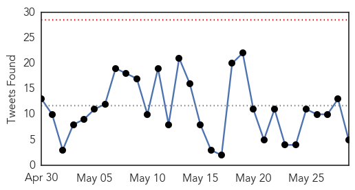
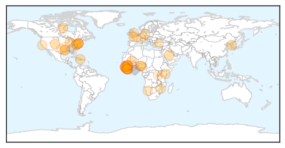
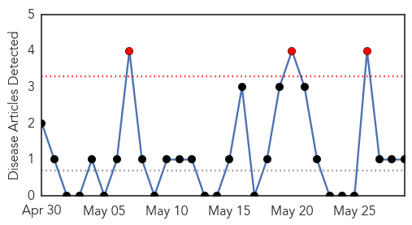
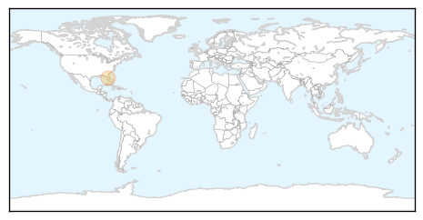

Ebola
30-Day Web Trend
0 alerts, 2 warnings

30-Day Twitter Trend
0 alerts, 0 warnings

Article Locations
Article Confidences

Top Articles:
- 1.000
- Ebola diaries: From denial and fear to action
- 0.999
- MERS outbreak in South Korea infects 10
- 0.999
- New Jersey businessman who died of Lassa Fever contacted 150 amid NY fears
- 0.999
- 150 People in New Jersey May Have Been Exposed to Rare African Virus
- 0.999
- 150 People May Have Had Contact With Lassa Fever Victim
- 0.998
- Bill Clinton: ‘I’m officially Ebola-free’
- 0.998
- Ebola crisis isn’t over…
- 0.997
- Mānoa: Second partner backs UH effort to develop Ebola vaccine
- 0.996
- Red Cross sends Ebola team to at-risk GBissau border
- 0.996
- China confirms first S.Korean MERS case in Guangdong
- 0.994
- New Jersey Lassa Fever Death Reveals Holes In Ebola Monitoring System
- 0.989
- Rare viral disease kills US man back from Liberia
- 0.988
- Researchers help biomed company land FDA approval for Ebola detection
- 0.984
- United Nations World Food Programme - Fighting Hunger Worldwide
- 0.980
- Dangote Foundation Commits N906M to Ebola, Articles
- 0.966
- Ebola Present in Eyes Even After Blood Test Clears Patient
- 0.960
- Bill Clinton Says He's Ebola-Free After Annual Africa Trip, Raises Awareness For Issue
- 0.947
- Possible Ebola case in Kansas City
- 0.907
- Elkhart nurse to return after second trip to help stem Ebola outbreak in Liberia
- 0.904
- Samantha Power Travels to Guinea Amid Ebola Outbreak
- 0.903
- Lost on the Ebola money trail
- 0.852
- US military orders wide review as more cases come to light
- 0.849
- Bill Clinton will ‘keep working’ if Hillary wins
- 0.845
- RSF hails Security Council's historic decision on protecting journalists
- 0.841
- Ebola Q&A: Why Doesn't Aid Go To Nurses?
- 0.838
- Doctors Without Borders Is Pulling Out Of The World's Largest Refugee Camp
- 0.817
- Ebola Survivor Takes Fiancé to Treatment Centre
- 0.786
- Bill Gates: Global Pandemic Will Wipe Out 33 Million In 1 Year
- 0.764
- An anthropology of aid in Africa
- 0.733
- Offline: An irreversible change in global health governance
- 0.732
- The Ticking Timeline
- 0.729
- Leadership and health in Africa
- 0.729
- Several Oregon facilities among nation's secretive biolabs
- 0.722
- HUMAN RIGHTS COMMISSION CONCLUDES SYMPOSIUM ON DRAFT CONSTITUTIONAL POSITION
- 0.712
- Labs handling dangerous pathogens face increased scrutiny
- 0.686
- President Koroma hosts Tony Blair
- 0.670
- Red Cross ambulance driver and Ebola survivor vows to continue the fight in Guinea
- 0.656
- Juror Jailed for Negligence
- 0.623
- IMC – A DOG WITH POISON TEETH!
- 0.615
- Higher viral load at admission predicts greater mortality in EVD patients
- 0.556
- Blood from Amber Vinson used to create anti-Ebola drug
- 0.545
- Minister Ngafuan highlights Africa’s transformation
- 0.531
- Committee on Infectious Disease Control set up in Tarkwa
- 0.529
- 7 biggest healthcare stories this week
- 0.519
- Bilolabs in your backyard
- 0.504
- Clinton calls for better health care in Africa
Top Tweets:
- 0.989
- One Year of Ebola in Sierra Leone: 'We Could Be Ebola-Free by End July' - Ebola Deeply http://t.co/vnG5drIsES ebola EVD
- 0.944
- Elkhart nurse to return after second trip to help stem Ebola outbreak in Liberia - The Elkhart Truth http://t.co/W7XM8OIfGa ebola EVD
- 0.857
- New Jersey Lassa Fever Death Reveals Holes In Ebola Monitoring System - NPR http://t.co/lyeJm66bcD ebola EVD
- 0.848
- Guinea. Lessonslearnt from the Ebola epidemic http://t.co/F4r38c6uIg
- 0.815
- 29 May - news pouch on avianflu avianinfluenza Ebola EbolaResponse MERS indiaheatwave http://t.co/lYbWfelZPu
- 0.810
- RT: The Ebola outbreak in West Africa is not over yet. WHO EbolaResponse: disease detection http://t.co/yQthY6n5YO http://t.co/hq1RJ…
- 0.787
- Researchers help biomed company land FDA approval for Ebola detection - Medical Xpress http://t.co/aUpvMYfOzi ebola EVD
- 0.738
- Jeff led CDC’s Infection Prevention and Control team while working in Sierra Leone on Ebola. Read his story: http://t.co/YuGLxd1kBT
- 0.713
- UN health agency sends team to Guinea & Guinea-Bissau border in response to reported Ebola spike http://t.co/NDXS27Qcbj
- 0.695
- RedCross helps Liberian children return to school following Ebola outbreak backtoschool https://t.co/Vh4PSWLGrL
- 0.686
- SierraLeone. @UNMEER commissions water well at children’s Ebola care centre in Freetown https://t.co/CARcMhc3ac
- 0.677
- Despite dropping case numbers, the 3 most affected countries will each retain a core capacity of Ebola treatment centres. EbolaResponse
- 0.667
- Hamilton Ebola whistleblower given provincial award - Hamilton Spectator http://t.co/CdOU2EOA7c ebola EVD
- 0.658
- Guinea. Finding Ebola gettozero http://t.co/hNilRJNn31
- 0.655
- The Ebola outbreak in West Africa is not over yet. WHO EbolaResponse in action: training http://t.co/yQthY6n5YO http://t.co/VKyJfdn7od
- 0.624
- Red Cross ambulance driver and Ebola survivor vows to continue the fight in ... - International Fe... http://t.co/EPBeYLlvgV ebola EVD
- 0.600
- Ebola, Liberia, and the "Cult of Bankable Projects" @carnegiecouncil http://t.co/hxKO18pbvP
- 0.516
- In April, over 2,000 orphaned children received food packages in the Ebola affected countries EbolaResponse http://t.co/sAW4jTwpsX
- 0.502
- Comment le Sénégal a vaincu Ebola https://t.co/cTdPnmwq0L via
Chikungunya
30-Day Web Trend
3 alerts, 0 warnings

30-Day Twitter Trend
0 alerts, 0 warnings

Article Locations
Article Confidences

Top Articles:
Top Tweets:
-
No tweets found for May 29, 2015